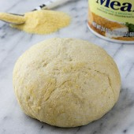

Cornmeal Pizza Dough

Cornmeal pizza dough gives great flavor and a nice crunch without needing to over bake your pizza.
Ingredients
- 3/4th Cup warm water heated to 115F
- 2 1/4 Tsp active dry yeast
- 1 1/2 Tsp granulated sugar
- 2 TBsp olive oil
- 2 Cup all purpose flour
- 1/2 Cup cornmeal
- 1 Tsp salt
Instructions
- Proof your yeast in a measuring cup with warm water and sugar. Allow to sit for 5-10 minutes. Add olive oil.
- In the bowl of a stand mixer with dough hook attachment, mix together salt, cornmeal and flour. With mixer running on low, add liquid ingredients. Mix until dough forms a ball and pulls away from the side of the bowl. Add additional flour a spoonful at a time as needed until dough is no longer sticky.
- Shape into a smooth ball. Transfer to a lightly greased bowl. Cover and allow to rise in a warm location until doubled in size.
- Preheat oven to 450°F. Shape dough into desired shape on a lightly greased baking sheet. Add desired toppings and bake for 12-15 minutes. Slice and serve warm.
Credit to Rachel for the recipe